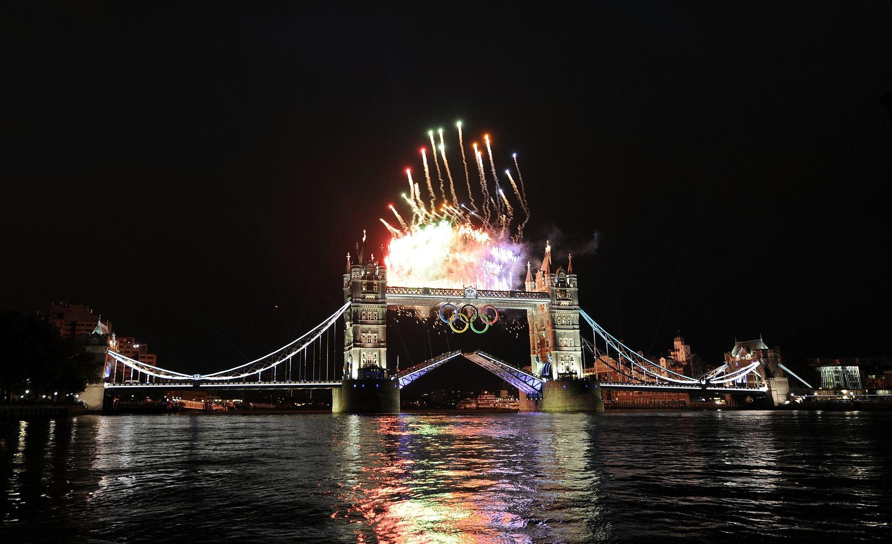
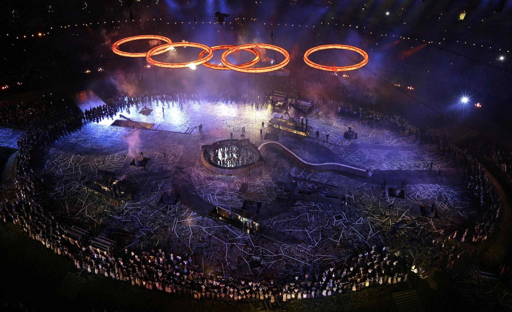
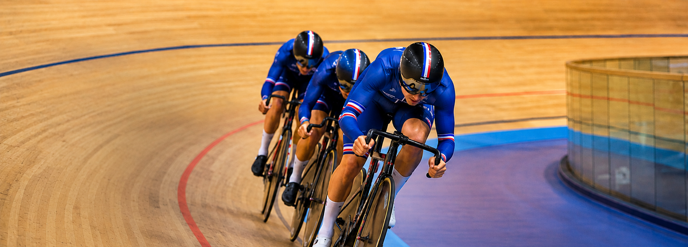
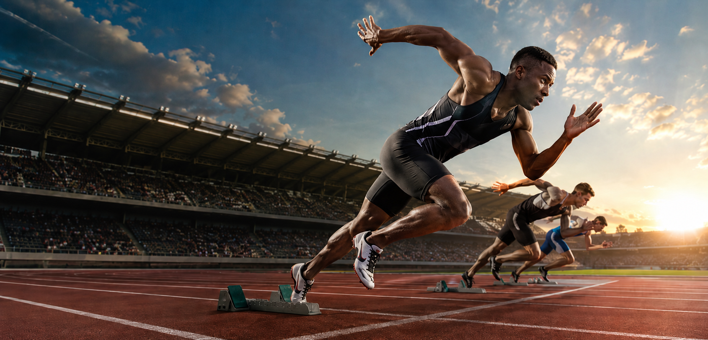

J-O 2012 LONDON






Londres accueille les Jeux Olympiques pour la troisième fois de son histoire, après 1908 et 1948, devenant ainsi la première ville à accomplir cet exploit.
Londres est la seule ville au monde à avoir organisé les Jeux Olympiques à trois reprises. Après avoir sauvé les Jeux en 1908 suite à l'éruption du Vésuve, et avoir accueilli les Jeux de la Résurrection en 1948 après la Seconde Guerre mondiale, la capitale britannique s'impose à nouveau comme la grande scène du sport mondial.
Le cœur des Jeux était le Parc Olympique de Stratford, dans l'est de Londres, construit sur d'anciennes friches industrielles. Le Stade Olympique, le Vélodrome et l'Aquatics Centre de Zaha Hadid ont été érigés pour l'occasion, transformant durablement tout un quartier défavorisé.
Londres 2012 a été marquée par des performances athlétiques hors du commun. Usain Bolt a conservé ses titres sur le 100m et le 200m, établissant un nouveau record olympique sur le 100m en 9,63 secondes. Les pistes du Stade Olympique ont vibré au rythme de performances entrées dans la légende.
Londres 2012 est souvent cité comme l'un des Jeux les mieux organisés de l'histoire. Le comité s'est engagé dans un programme de régénération urbaine ambitieux, avec des infrastructures reconverties en équipements sportifs permanents ouverts à tous les habitants de l'est londonien après les Jeux.
« Inspire une génération. »
— Devise officielle des Jeux Olympiques de Londres 2012
27 Juillet - 12 Août 2012
Intitulée « Isles of Wonder » (Îles des Merveilles), la cérémonie d'ouverture a eu lieu le 27 juillet 2012 au Stade Olympique de Stratford, mise en scène par le réalisateur britannique Danny Boyle.
Le spectacle a retracé l'histoire de la Grande-Bretagne en trois actes : la révolution industrielle symbolisée par des cheminées d'usine jaillissant du sol, le National Health Service célébré avec 600 infirmières dansantes, et une immersion dans la culture populaire britannique des Beatles à James Bond.
Le moment le plus mémorable reste l'apparition de Sa Majesté la Reine Élisabeth II aux côtés d'un sosie de James Bond, tous deux semblant sauter en parachute depuis un hélicoptère pour atterrir dans le stade, avant que la flamme olympique ne soit allumée par sept jeunes athlètes britanniques prometteurs.
Histoire, règles fondamentales et athlètes légendaires qui ont marqué l'édition de Londres 2012

Le cyclisme sur piste se déroule dans un vélodrome sur des pistes ovales inclinées. Les épreuves mêlent vitesse pure, sprint tactique et endurance dans des formats aussi variés que la keirin, la poursuite ou l'omnium.
Conçu par Hopkins Architects, le Vélodrome du Parc Olympique est unanimement salué comme le chef-d'œuvre architectural des Jeux, avec sa piste en bois de sycamore et ses tribunes pour 6 000 spectateurs.

Discipline historique regroupant plusieurs catégories de poids où la vitesse de bras s'allie à la science de l'esquive. La moindre erreur d'inattention ou de garde y est fatale. L'ExCeL London, immense complexe moderne au cœur des Docklands, en était le théâtre idéal.
Ce centre d'exposition gigantesque est devenu l'épicentre des sports de combat des Jeux de 2012. Ses arènes survoltées ont accueilli les rings olympiques et des milliers de spectateurs venus encourager les meilleurs boxeurs de la planète dans une ambiance électrique.
À Londres, Joshua a fait vibrer son public en décrochant la médaille d'or des super-lourds au terme d'une finale d'anthologie — un sacre historique qui allait marquer le début de son ascension vers les sommets de la boxe mondiale.

L'athlétisme regroupe les disciplines de course, de saut et de lancer. Programme le plus fourni des Jeux, il est le reflet direct des capacités physiques humaines, de la vitesse pure au marathon de 42 km.
Le 4 août 2012, surnommé « Super Saturday », la Grande-Bretagne a remporté 3 médailles d'or en athlétisme en moins d'une heure : Jessica Ennis (heptathlon), Greg Rutherford (saut en longueur) et Mo Farah (10 000m).
Pays et athlètes qui ont marqué les Jeux Olympiques de Londres 2012
Classement par nombre d'or — Londres 2012
Les performances individuelles les plus marquantes
Sources : Comité International Olympique (CIO) · Londres 2012 · données officielles finales
Survolez un site pour découvrir les épreuves et médailles qui s'y sont jouées
Le Super Saturday du 4 août 2012 : trois médailles d'or britanniques en moins d'une heure — le soir le plus mémorable de l'histoire sportive britannique.
Joyau architectural des Jeux, le Vélodrome de Hopkins Architects est devenu le symbole de la domination britannique sur le cyclisme sur piste mondial.
La vague ondulante de Zaha Hadid — l'un des plus beaux bâtiments jamais construits pour les Jeux — a été le théâtre des adieux olympiques de Michael Phelps.
Sur le gazon sacré de Wimbledon, Andy Murray a battu Roger Federer en finale pour offrir à la Grande-Bretagne sa médaille d'or la plus symbolique, deux semaines après sa défaite en finale de Wimbledon face au même adversaire.
Hyde Park a offert l'une des images les plus touchantes des Jeux : les frères Brownlee, l'un en or et l'autre en argent, devant des centaines de milliers de Londoniens en liesse.
Avec l'Observatoire Royal en toile de fond, les épreuves d'équitation de Greenwich Park ont mêlé l'élégance du sport hippique aux paysages historiques de Londres.
Le centre d'exposition ExCeL a vibré aux sons des combats de boxe et de judo. Anthony Joshua y a décroché l'or qui lancera sa future carrière professionnelle légendaire.
La cathédrale du football britannique a accueilli les finales olympiques de football, avec 80 000 spectateurs pour chaque match, une ambiance incomparable dans cette enceinte mythique.